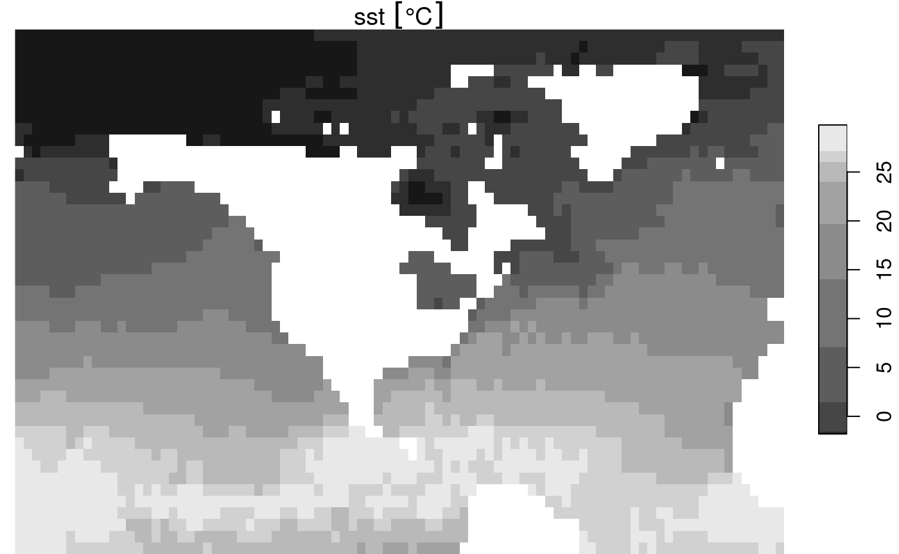

NetCDF data sources are available via more and less granular
files and/or OPeNDAP endpoints. This article demonstrates how
stars enables discovery, access, and processing of NetCDF
data across a wide range of such source-data organization schemes.
We’ll start with some basics using datasets included with the
stars installation. A call to read_ncdf(), for
a dataset smaller than the default threshold, will just read in all the
data. Below we read in and display the reduced.nc NetCDF
file.
library(stars)
## Loading required package: abind
## Loading required package: sf
## Linking to GEOS 3.10.2, GDAL 3.4.1, PROJ 8.2.1; sf_use_s2() is TRUE
f <- system.file("nc/reduced.nc", package = "stars")
(nc <- read_ncdf(f))
## no 'var' specified, using sst, anom, err, ice
## other available variables:
## lon, lat, zlev, time
## 0-360 longitude crossing the international dateline encountered.
## Longitude coordinates will be0-360 in output.
## Will return stars object with 16200 cells.
## No projection information found in nc file.
## Coordinate variable units found to be degrees,
## assuming WGS84 Lat/Lon.
## stars object with 4 dimensions and 4 attributes
## attribute(s):
## Min. 1st Qu. Median Mean 3rd Qu. Max. NA's
## sst [°C] -1.80 -0.03 13.655 12.9940841 24.8125 32.97 4448
## anom [°C] -7.95 -0.58 -0.080 -0.1847324 0.2100 2.99 4449
## err [°C] 0.11 0.16 0.270 0.2626872 0.3200 0.84 4448
## ice [percent] 0.01 0.47 0.920 0.7178118 0.9600 1.00 13266
## dimension(s):
## from to offset delta refsys values x/y
## lon 1 180 -1 2 WGS 84 NULL [x]
## lat 1 90 -90 2 WGS 84 NULL [y]
## zlev 1 1 NA NA NA 0
## time 1 1 NA NA POSIXct 1981-12-31 UTCLet’s assume reduced.nc was 10 years of hourly data,
rather than 1 time step. It would be over 10GB rather than about 130KB
and we would not be able to just read it all into memory. In this case,
we need a way to read the file’s metadata such that we could iterate
over it in a way that meets the needs of our workflow objectives. This
is where proxy = TRUE comes in. Below, we’ll lower the
option that controls whether read_ncdf() defaults to proxy
and use proxy = TRUE to show both ways of getting
the same result.
old_options <- options("stars.n_proxy" = 100)
(nc <- read_ncdf(f, proxy = TRUE))
## no 'var' specified, using sst, anom, err, ice
## other available variables:
## lon, lat, zlev, time
## 0-360 longitude crossing the international dateline encountered.
## Longitude coordinates will be0-360 in output.
## No projection information found in nc file.
## Coordinate variable units found to be degrees,
## assuming WGS84 Lat/Lon.
## netcdf source stars proxy object from:
## [1] "[...]/reduced.nc"
##
## Available nc variables:
## sst
## anom
## err
## ice
##
## dimension(s):
## from to offset delta refsys values x/y
## lon 1 180 -1 2 WGS 84 NULL [x]
## lat 1 90 -90 2 WGS 84 NULL [y]
## zlev 1 1 NA NA NA 0
## time 1 1 NA NA POSIXct 1981-12-31 UTC
options(old_options)The above shows that we have a NetCDF sourced stars proxy derived
from the reduced.nc file. We see it has four variables and
their units are displayed. The normal stars
dimension(s) are available and a nc_request
object is also available. The nc_request object contains
the information needed to make requests for data according to the
dimensions of the NetCDF data source. With this information, we have
what we need to request a chunk of data that is what we want and not too
large.
(nc <- read_ncdf(f,
var = "sst",
ncsub = cbind(start = c(90, 45, 1 , 1),
count = c(90, 45, 1, 1))))
## 0-360 longitude crossing the international dateline encountered.
## Longitude coordinates will be0-360 in output.
## Will return stars object with 4050 cells.
## No projection information found in nc file.
## Coordinate variable units found to be degrees,
## assuming WGS84 Lat/Lon.
## stars object with 4 dimensions and 1 attribute
## attribute(s):
## Min. 1st Qu. Median Mean 3rd Qu. Max. NA's
## sst [°C] -1.8 -1.04 14 12.92722 25.13 29.81 757
## dimension(s):
## from to offset delta refsys values x/y
## lon 1 90 177 2 WGS 84 NULL [x]
## lat 1 45 -2 2 WGS 84 NULL [y]
## zlev 1 1 NA NA NA 0
## time 1 1 NA NA POSIXct 1981-12-31 UTC
plot(nc)
The ability to view NetCDF metadata so we can make well formed requests against the data is useful, but the real power of a proxy object is that we can use it in a “lazy evaluation” coding style. That is, we can do virtual operations on the object, like subsetting with another dataset, prior to actually accessing the data volume.
Lazy operations.
There are two kinds of lazy operations possible with
stars_proxy objects. Some can be applied to the
stars_proxy object itself without accessing underlying
data. Others must be composed as a chain of calls that will be applied
when data is actually required.
Methods applied to a stars_proxy object:
-
[- Nearly the same as stars_proxy -
[[<-- stars_proxy method works -
print- unique method for nc_proxy to facilitate unique workflows -
dim- stars_proxy method works -
c- stars_proxy method works -
st_redimension- Not sure what this entails but it might not make sense for nc_proxy. -
st_mosaic* Calls read_stars on assembled list. Not supported for now. st_set_bbox
Methods that add a call to the call_list.
[<-adropapermis.nasplitst_applypredictmergest_cropdrop_levels-
Ops(group generic for +, -, etc.) -
Math(group generic for abs, sqrt, tan, etc.) filtermutatetansmuteselectrenamepull-
slice* hyperslabbing for NetCDF could be as above? pullreplace_na
Methods that cause a stars_proxy object to be fetched
and turned into a stars object.
as.data.frameplotst_as_starsaggregate-
st_dimensions<-* https://github.com/r-spatial/stars/issues/494 histst_downsamplest_samplest_as_sfwrite_stars